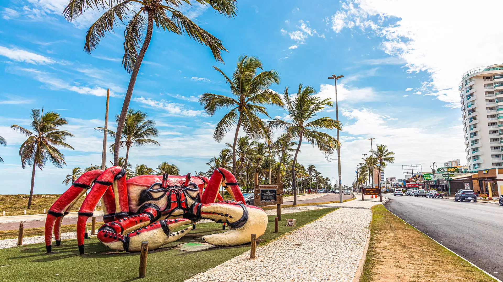
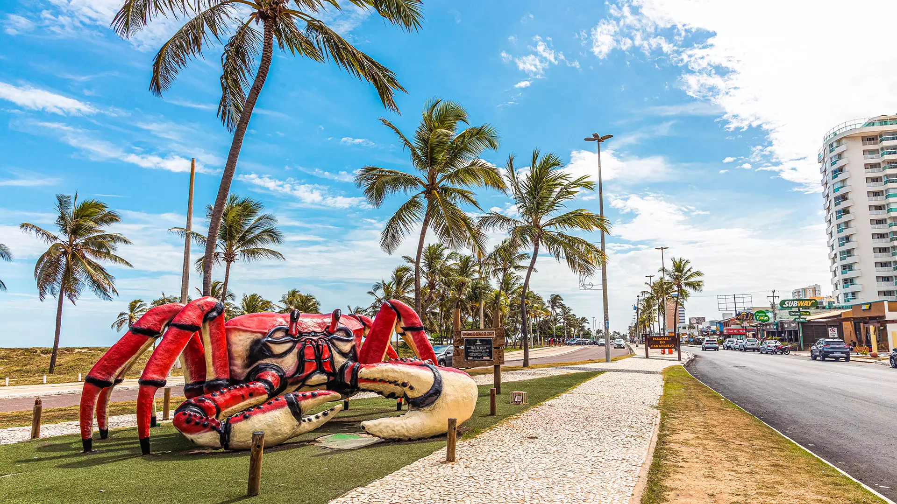
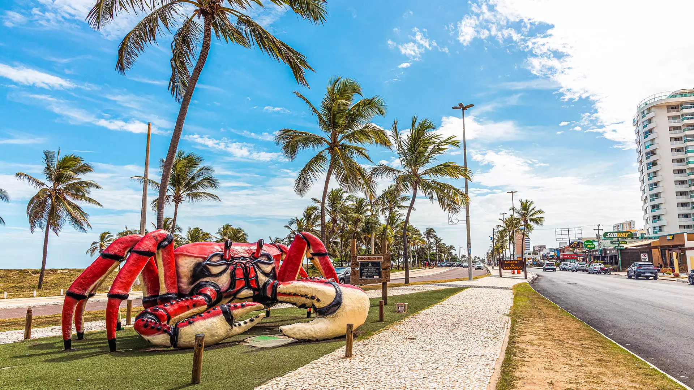
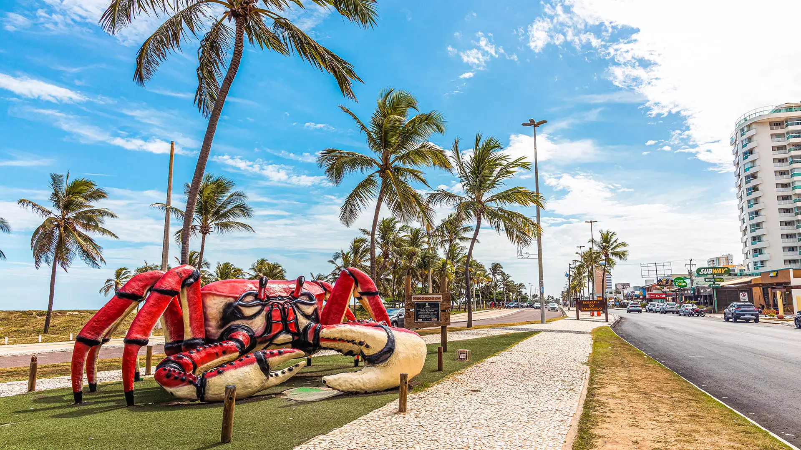

SERGIPE
ARACAJU
1st IEEE CASS SERGIPE WORKSHOP
 

 

1st IEEE CASS Northeast Brazil Workshop on Circuits and Systems
We are pleased to announce the inaugural IEEE Circuits and Systems Society (CASS) Workshop in Brazil's Northeast region, to be held in Aracaju, Sergipe. This landmark event aims to foster academic and industrial exchange among local and international researchers, strengthening the circuits and systems community in the region.
Over two days, the workshop will feature a diverse program, including keynote lectures by distinguished experts from leading institutions in the field, hands-on workshops, and poster sessions.This event presents a unique opportunity for students, researchers, and industry professionals to connect, share knowledge, and explore future collaborations. The hosting of this workshop in the Northeast underscores IEEE CASS's commitment to expanding its global presence and supporting regional development in circuits and systems.
| Time | Monday, 17/07/2025 | Tuesday, 18/07/2025 |
|---|---|---|
| 13:30 ~ 14:40 (Introductory lecture) |
Digital Design Algorithms Jose Luis Guntzel – UFSC and IEEE Senior member |
Transistor Models and Fault Tolerance Analysis Cristina Meinhardt – UFSC and IEEE Senior member |
| 14:50 ~ 16:00 (Advanced Lecture) |
Trends on EDA Ricardo Reis – UFRGS and IEEE Fellow |
Physical Design Automation of Transistor Networks Ricardo Reis – UFRGS and IEEE Fellow |
| 16:10 ~ 17:00 | Coffee break and Panel | Coffee break and Panel |
| 17:10 ~ 18:30 | Industrial Talks | Industrial Talks |